정보처리기능사 (2005-10-02 기출문제)
1과목: 전자 계산기 일반
1. ROM(Read Only Memory)에 대한 옳은 설명은?
- 데이터를 읽는 것만 가능하다.
- 데이터를 읽고 기록하는 것 모두 가능하다.
- 데이터를 기록하는 것만 가능하다.
- 데이터를 읽고 기록하는 것 모두 불가능하다.
(정답률: 76%)

2. 중앙처리기의 제어 부분에 의해서 해독되어 현재 실행중인 명령어를 기억하는 레지스터는?
- PC(Program Counter)
- IR(Instruction Register)
- MAR(Memory Address Register)
- MBR(Memory Buffer Register)
(정답률: 69%)
3. 모든 입력이 1일 때만 출력이 1이 되고, 입력이 하나라도 0이면 출력은 0이 되는 게이트(Gate)는?
- OR
- NOT
- NAND
- AND
(정답률: 80%)
4. 8비트 짜리 레지스터 A와 B에 각각 “11010101”과 “11110000”이 들어 있다. 레지스터 A의 내용이 “00100101”로 바뀌었다면 두 레지스터 A, B사이에 수행된 논리 연산은?
- Exclusive-OR 연산
- AND 연산
- OR 연산
- NOR 연산
(정답률: 70%)
5. 하나의 레지스터에 기억된 자료를 모두 다른 레지스터로 옮길 때 사용하는 논리 연산은?
- Rotate
- Shift
- Move
- Complement
(정답률: 72%)
6. 명령어 내의 오퍼랜드가 지정한 곳에 실제 데이터 값이 기억된 장소를 지정하는 방식으로, 피 연산자를 구하기 위하여 두 번의 기억장소 접근을 해야 하는 방식은?
- 직접주소
- 간접주소
- 기본주소
- 상대주소
(정답률: 65%)
7. 원격지에 설치된 입·출력장치를 무엇이라 하는가?
- 변·복조장치(MODEM)
- 콘솔(Console)
- 단말장치
- X-Y 플로터
(정답률: 58%)
8. 진리표가 다음 표와 같이 되는 논리회로는?
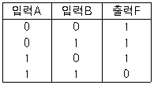
- AND 게이트
- OR 게이트
- NOR 게이트
- NAND 게이트
(정답률: 76%)
9. JK 플립플롭(Flip-flop)에서 보수가 출력되기 위한 입력값 J, K의 입력 상태는?
- J=1, K=0
- J=0, K=1
- J=1, K=1
- J=0, K=0
(정답률: 84%)
10. 명령어(Instruction) 형식에서 첫 번째 바이트의 기능이 아닌 것은?
- 자료의 주소 지정 기능
- 제어 기능
- 자료 전달 기능
- 함수 연산 기능
(정답률: 54%)
11. 2진수 1011을 그레이 코드(Gray Code)로 변환한 것은?
- 0111
- 1110
- 0100
- 1010
(정답률: 68%)
12. 주소 10에 20이란 값이 지정되어 있고, 주소 20에는 40이라는 값이 저장되어 있다고 할 때 간접 주소 지정에 의해 10번지를 액세스하면 실제 꺼내지는 값은?
- 10
- 20
- 30
- 40
(정답률: 65%)
13. 2항 연산(Binary Operation)과 관계가 있는 것은?
- Shift
- Rotate
- Complement
- AND
(정답률: 74%)
14. 현재 실행중인 명령어를 기억하고 있는 제어장치 내의 레지스터는?
- 누산기(Accumulator)
- 인덱스 레지스터
- 메모리 레지스터
- 명령어 레지스터
(정답률: 69%)
15. 아래 게이트 기호를 논리식으로 바르게 표현한 것은?
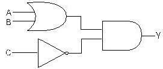
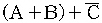
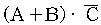
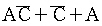
(정답률: 76%)
16. 16진수 FF를 10진수로 나타낸 것은?
- 256
- 265
- 255
- 245
(정답률: 64%)
17. 동시에 여러 개의 입·출력장치가 작동되도록 설계된 것은?
- Simplex Channel
- Multiplexer Channel
- Selector Channel
- Register Channel
(정답률: 87%)
18. 다음 중 불(Boolean) 대수의 정리로 옳지 않은 것은
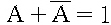
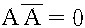
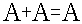
(정답률: 74%)
19. 마이크로프로세서의 구성에 해당하지 않는 것은?
- 제어장치
- 연산장치
- 레지스터
- 출력장치
(정답률: 52%)
20. 그림과 같은 논리회로의 출력 C는 얼마인가?
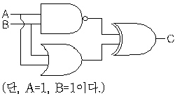
- 0
- 1
- 10
- 11
(정답률: 69%)
2과목: 패키지 활용
21. 어떤 릴레이션 R의 정의에서 에트리뷰트의 개수를 무엇이라 하는가?
- 개체(Entity)
- 뷰(View)
- 차수(Degree)
- 기수(Cadinality)
(정답률: 60%)
22. 데이터베이스 제어어(DCL) 중 사용자에게 조작에 대한 권한을 부여하는 명령어는?
- OPTION
- REVOKE
- GRANT
- VALUES
(정답률: 55%)
23. Windows용 다른 응용 프로그램에서 그림의 전체나 일부분을 잘라 자신이 사용중인 스프레드시트에 삽입하려고 한다. 이때 임시로 사용되는 장소를 무엇이라고 하는가?
- Sheet
- Clipboard
- Class
- SQL
(정답률: 67%)
24. DBMS의 필수 기능으로 거리가 먼 것은?
- 정의 기능
- 조작 기능
- 제어 기능
- 연산 기능
(정답률: 74%)
25. 다음 SQL 검색문의 의미로 옳은 것은?
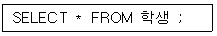
- 학생 테이블에서 첫 번째 레코드의 모든 필드를 검색하라.
- 학생 테이블에서 마지막 레코드의 모든 필드를 검색하라.
- 학생 테이블에서 전체 레코드의 모든 필드를 검색하라.
- 학생 테이블에서 “*” 값이 포함된 레코드의 모든 필드를 검색하라.
(정답률: 74%)
26. 테이블 삭제시 사용하는 SQL 명령은?
- CREATE TABLE
- DELETE TABLE
- DROP TABLE
- ALTER TABLE
(정답률: 72%)
27. 스프레드시트의 기능이라고 볼 수 없는 것은?
- 데이터 연산 결과를 사용자가 다양한 서식으로 자유롭게 표현한다.
- 입력된 자료 또는 계산된 자료를 가지고 여러 유형의 그래프를 작성한다.
- 동영상 처리 및 애니메이션 효과를 구현할 수 있다.
- 특정 자료의 검색, 추출 및 정렬을 한다.
(정답률: 84%)
28. 스프레드시트 작업에서 반복되거나 복잡한 단계를 수행하는 작업을 일괄적으로 자동화시켜 처리하는 방법에 해당하는 것은?
- 매크로
- 정렬
- 검색
- 필터
(정답률: 83%)
29. 다음은 SQL 데이터 조작에서 테이블의 열 전체를 검색하는 방법이다. 빈칸의 내용으로 알맞게 짝지어진 것은?
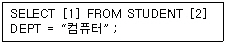
- 1 : TABLE, 2 : CONDITION
- 1 : ALL, 2 : WHEN
- 1 : *, 2 : WHERE
- 1 : *, 2 : CONDITION
(정답률: 64%)
30. 사원(사원번호, 이름) 테이블에서 “사원번호”가 “200”인 튜플을 삭제하는 SQL 문은?
- REMOVE TABLE 사원 WHERE 사원번호 = 200 ;
- DELETE, 사원번호, 이름 FROM 사원 WHERE 사원번호 = 200 ;
- DELETE FROM 사원 WHERE 사원번호 = 200 ;
- DROP TABLE 사원 WHERE 사원번호 = 200 ;
(정답률: 51%)
3과목: PC 운영 체제
31. 도스(MS-DOS)에서 “AAA”라는 디렉토리를 만들 때의 명령은(단, 현재 디렉토리는 C:\ 임)?
- C:\>MD AAA
- C:\>CD AAA
- C:\>ED AAA
- C:\>RD AAA
(정답률: 68%)
32. Which of the following key strokes is able to copy it to the clipboard in WINDOWS 98?
- Alt + C
- Ctrl + V
- Ctrl + A
- Ctrl + C
(정답률: 74%)
33. Windows 98의 시작버튼 위에서 마우스의 오른쪽 버튼을 눌렀을 때 나타나는 메뉴가 아닌 것은?
- 열기
- 탐색
- 설정
- 찾기
(정답률: 54%)
34. 도스(MS-DOS)의 DIR 명령 중 한 줄에 5개씩 파일 이름이나 디렉토리를 출력해 주는 것은? (단, 현재 디렉토리는 C:\ 임)
- C:\>DIR/P
- C:\>DIR/W
- C:\>DIR/S
- C:\>DIR/AD
(정답률: 49%)
35. CPU 스케줄링 알고리즘에서 규정 시간 또는 시간 조각(Slice)을 미리 정의하여 CPU 스케줄러가 준비 상태 큐에서 정의된 시간만큼 각 프로세스에 CPU를 제공하는 시분할 시스템에 적절한 스케줄링 알고리즘은?
- RR(Round Robin)
- FCFS(First Come First Served)
- SJF(Shortest Job First)
- SRT(Shortest Remaining Time)
(정답률: 55%)
36. UNIX에서 현재 작업중인 프로세스의 상태를 알아볼 때 사용하는 명령어는?
- ls
- ps
- kill
- chmod
(정답률: 60%)
37. 도스(MS-DOS)에서 외부 명령어에 대한 설명으로 옳은 것은?
- 독립된 파일의 형태로 DIR 명령으로 확인이 가능하다.
- COMMAND.COM이 주기억장치에 올려짐으로써 사용할 수 있다.
- 주기억장치에 항상 올려져 있는 명령어이다.
- DIR은 외부 명령어의 하나이다.
(정답률: 44%)
38. Windows 98의 탐색기에서 비연속적인 여러 개의 파일을 선택하는 방법은?
- Ctrl 키를 누른 상태에서 선택하려는 파일들을 왼쪽 마우스 버튼을 클릭하여 선택한다.
- Shift 키를 누른 상태에서 선택하려는 파일들을 왼쪽 마우스 버튼을 클릭하여 선택한다.
- Alt 키를 누른 상태에서 선택하려는 파일들을 오른쪽 마우스 버튼을 클릭하여 선택한다.
- Shift 키를 누른 상태에서 선택하려는 파일들을 오른쪽 마우스 버튼을 클릭하여 선택한다.
(정답률: 70%)
39. 컴퓨터 시스템을 구성하고 있는 하드웨어 장치와 일반 컴퓨터 사용자 또는 컴퓨터에서 실행되는 응용 프로그램의 중간에 위치하여 사용자들이 보다 쉽고 간편하게 컴퓨터 시스템을 이용할 수 있도록 제어 관리하는 프로그램?
- 컴파일러
- 운영체제
- 스풀러
- 매크로
(정답률: 76%)
40. Windows 98에서 시동 디스크(부팅 디스크)를 만드는 기능은 어디에 있는가?
- 내게 필요한 옵션
- 시스템
- 프로그램 추가/삭제
- 디스플레이
(정답률: 59%)
41. Windows 98에서 바탕화면에 있는 아이콘들을 정렬하려고 할 때 기본적으로 제공하는 아이콘 정렬 방식이 아닌 것은?
- 종류별 정렬
- 자동 정렬
- 계단식 정렬
- 크기순 정렬
(정답률: 73%)
42. 도스(MS-DOS)에서 아래 내용이 설명하는 것은?
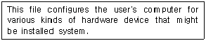
- FDISK.EXE
- CONFIG.SYS
- SYS.COM
- FORMAT.COM
(정답률: 56%)
43. Windows 98에서 클립보드에 현재 화면에서 활성 윈도우를 복사하는 기능키는?
- Ctrl + Print Screen
- Alt + F
- Alt + Print Screen
- Ctrl + V
(정답률: 54%)
44. 컴퓨터 시스템의 성능을 최적화 하기 위하여 사용되는 운영체제의 기능과 거리가 먼 것은?
- 초기 설정 기능
- 인터페이스 기능
- 이식성 기능
- 시스템 비보호 기능
(정답률: 66%)
45. 중앙처리장치와 같이 처리 속도가 빠른 장치와 프린터와 같이 처리 속도가 느린 장치들 간의 처리 속도 문제를 해결하기 위한 방법은?
- 링킹
- 스풀링
- 매크로 작업
- 컴파일링
(정답률: 72%)
46. Windows 98에서 디스크 조각 모음을 수행할 수 없는 매체는(단, 각 매체는 로컬(Local) 매체를 의미한다.)?
- 3.5인치 플로피디스크
- USB 메모리(이동식 디스크)
- 하드디스크
- CD-ROM
(정답률: 54%)
47. Windows 98에서 디스크 조각 모음에 관한 설명으로 옳은 것은?
- 디스크의 논리적 영역을 할당한다.
- 디스크의 삭제된 파일을 복구한다.
- 디스크의 물리적 손상 부분을 제거한다.
- 디스크를 효율적으로 사용하기 위해 파일을 정리한다.
(정답률: 63%)
48. Windows 98에서 새로운 하드웨어를 장착하고 시스템을 가동시키면 자동으로 하드웨어를 인식하고 실행하는 기능은?
- Interrupt 기능
- Auto & Play 기능
- Plug & Play 기능
- Auto & Plug 기능
(정답률: 79%)
49. Windows 98에서 사용자를 변경하려면 시작 단추에 있는 어떤 메뉴를 클릭하는가?
- 실행
- 프로그램
- 설정
- 로그오프
(정답률: 60%)
50. Windows 98에서 제어판에 있는 디스플레이 항목의 기능이 아닌 것은?
- 해상도 지정
- 배경 무늬 지정
- 화면 보호 기능
- 마우스 포인터의 모양 변경
(정답률: 70%)
4과목: 정보 통신 일반
51. FTP(File Transfer Protocols)는 OSI 7계층 중 몇 계층에 속하는가?
- 데이터 링크 계층
- 네트워크 계층
- 세션 계층
- 응용 계층
(정답률: 40%)
52. 10개의 교환국(Station)을 성형 회선망으로 구성할 때 소요되는 중계회선수는?
- 9
- 10
- 45
- 90
(정답률: 19%)
53. 정보가 축적된 데이터베이스로부터 TV 수신기와 전화의 연결에 의한 정보 서비스로 전화선을 이용하여 각종 정보 검색을 할 수 있는 화상 정보 시스템은?
- 유선종합방송(CATV)
- 텔레텍스트(Teletext)
- 비디오텍스(Videotex)
- 근거리지역통신망(LAN)
(정답률: 32%)
54. 광섬유 케이블의 장점이 아닌 것은?
- 잡음 영향이 적다.
- 대역폭이 넓다.
- 도청이 어렵다.
- 누화량이 많다.
(정답률: 60%)
55. 다음 설명 중 틀린 것은?
- 동기식 데이터 전송은 주로 고속전송에서 사용된다.
- 2선식 회선에서도 전이중 방식의 데이터 전송이 가능하다.
- 공중 전화 교환망을 이용한 데이터통신은 주로 회선 교환 방식이 이용된다.
- 음향결합기란 변복조장치와 연결하여 자동 응답 기능을 제공하는 데이터통신용 기기이다.
(정답률: 31%)
56. 마이크로파(Microwave) 통신 방식과 관계없는 것은?
- 전자파를 이용하는 무선 통신 방식이다.
- 광을 이용하므로 전송 속도가 빠르다.
- 이동통신 수단으로도 이용되고 있다.
- 중계거리를 고려하여야 한다.
(정답률: 49%)
57. 반송파 신호(Carrier Signal)의 피크-투-피크(Peak-to-Peak) 전압이 변하는 아날로그 변조 방식은?
- AM(Amplitude Modulation)
- FM(Frequency Modulation)
- PM(Phase Modulation)
- PCM(Pluse Code Modulation)
(정답률: 45%)
58. 다음 중 DTE와 접속 규격의 25핀 커넥터에서 데이터의 송·수신에 관계되는 핀 단자 번호는?
- 8번과 12번
- 2번과 3번
- 5번과 7번
- 1번과 25번
(정답률: 57%)
59. 통신 용량을 향상시키려면 대역폭을 어떻게 하는 것이 가장 적합한가?
- 대역폭과는 전혀 관계가 없다.
- 대역폭이 진폭과 진동 시간에 비례하여야 한다.
- 대역폭을 크게 한다.
- 대역폭이 좀더 좁아져야 한다.
(정답률: 47%)
60. 데이터통신에 대한 특징을 설명한 것으로 가장 적합하지 않은 것은?
- 고속 통신이 가능하다.
- 경제성이 높으나 응용 범위가 좁다.
- 거리와 시간의 문제가 해결된다.
- 대형 컴퓨터를 공동으로 사용할 수 있다.
(정답률: 61%)